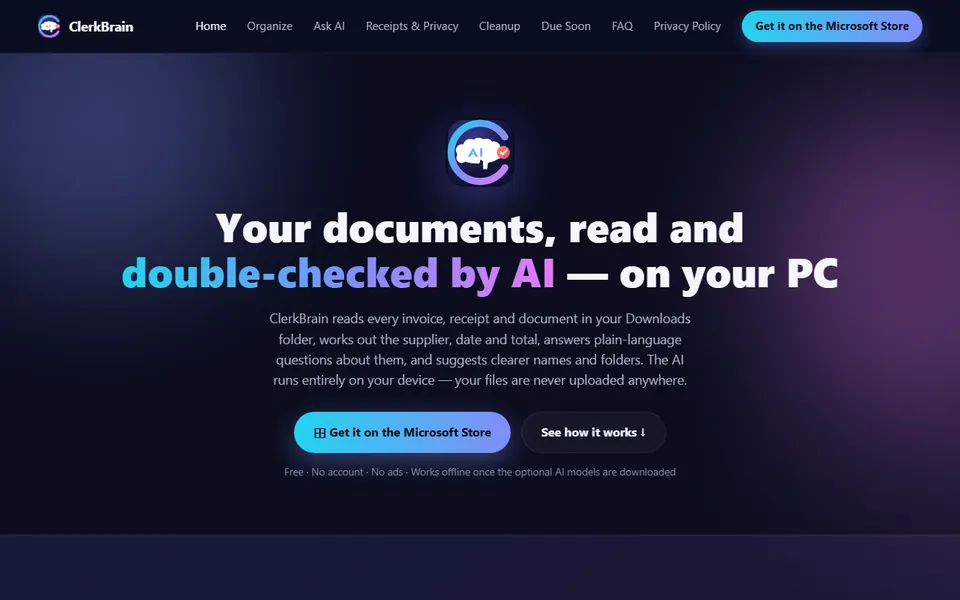

Windows app · Live
ClerkBrain
ClerkBrain keeps an eye on the folders you pick, reads incoming paperwork (PDFs, Office files, photos and scans), pulls out the key figures and lets you search or ask questions about it. Naming and filing suggestions wait for your approval, and the on-device AI never sends your files elsewhere.
Who it is for: For anyone with piles of invoices and receipts who wants them sorted without uploading them anywhere.
What it does
- Works through PDFs, Office files, photos and scans in the folders you select
- Reads out supplier, date, total and invoice number
- Finds files by keyword, or by meaning once the optional AI models are installed
- Answers plain-language questions and points to the source documents
- Suggests names and folders, with undo on every change
- Marks uncertain readings and flags duplicates and leftovers
- Builds a year-end pack for your accountant
What it doesn't do
- Send your documents anywhere. The AI runs on your device
- File anything without asking. Auto-filing stays off until you switch it on
